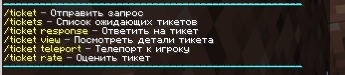

Как работать с тикетами |
Тикеты - вопросы от игроков по правилам проекта, механикам проекта и механикам майнкрафта, а так же жалобы и предложения. |
Основные команды |
 |
Как использовать: 1. Для просмотра вопросов от игроков используйте команду /tickets . После использования команды, в чате появится сообщение с вопросами от игроков. 2. Нажав кнопку "Посмотреть" , вы увидите ID Тиккета, Ник игрока, Причину обращения. 3. Нажав кнопку "Ответ" , в чате появится команда, после которой необходимо предоставить игроку информационную поддержку отностильно его вопроса. По указанной форме "/ticket response [ID тиккета] Здравствуйте! [Ответ]. Приятной игры, если будут вопросы - обращайтесь в /ticket!" . Если для решения вопроса необходимо находится рядом с игроком, используйте кнопку "Телепорт" , что бы оказаться рядом с ним. При решении вопроса игрока на месте в чате, тикет закрывается по форме "/ticket response [ID тиккета] Решено на месте, если будут вопросы - обращайтесь в /ticket!" . Если вопрос не относится к игровому процессу или к проекту, либо вас просят дать что-либо (ресурсы, донат, скрафтить предмет), тикет закрывается по форме "/ticket response [ID тиккета] Здравствуйте! Ваша просьба к действям административного характера не относится. Приятной игры, если будут вопросы - обращайтесь в /ticket!" . Если вопрос игрока относится к тек с турпаку, соединению с сервером, или обжалованию наказания и прочим техническим вопросам, тикет закрывается по форме « /ticket response [ID тиккета] Здравствуйте! Для решения вашей проблемы вам следует обратиться в бота поддержки (вашего режима. Например полит) "t.me/ttp_polit_bot". Приятной игры, если будут вопросы - обращайтесь в /ticket!" . Примечание: Ссылки обязательно указываются в кавычках "ссылка" . Примеч а ние: Ответ обязательно должен соответствовать форме "/ticket response [ID тиккета] [Приветсвие] [Ответ] [Заключение]" . Примечание: Повторяющиеся тикеты от одного и того же игрока (дубликаты) закрываются по форме "/ticket response [ID тиккета] Дубликат тикета ID (тиккета на котором был дан полный ответ)" . Примечание: Если игрок находился в полете, во время того как вы нажали кнопку "Телепорт" , вы получите урон от падения. Примечание: Оценка ответа на тикет от игрока не влияет на ваш рейтинг. Примечание: К ответам на тикеты стоит подходить серьезно , так как каждый ваш ответ будет оценен ответственным модератором. Примечание: Тикеты пришедшие во время игровой сессии необходимо закрывать сразу. Примечание : Если вы не понимаете вопроса от игрока, попросите его уточнить информацию в следующем тикете по форме "/ticket response [ID тиккета] Здравствуйте! Пожалуйста предоставьте больше информации в следующем тикете - /ticket. Приятной игры!" |
Пример ответа на тикет |
Вы прописали команду /tickets и видите что там есть вопрос от игрока Player01: Здравствуйте как мне прокачать век в городе? Вы нажимаете на кнопку "Посмотреть" , читаете и анализируете вопрос, далее вы нажимаете на кнопку "Ответить" и пишите в ответе: "/ticket response [ID тиккета] Здравствуйте. Команда - /t century, там указаны необходимые ресурсы для прокачки, их нужно положить в /t inv. Если у вас будут оставаться еще какие-либо вопросы по режиму - обращайтесь в /ticket. Приятной игры!" |
/support — Предложить помощь игрокам |
Как использовать: 1. Для предложения помощи игрокам используем команду /support . После использования команды, в чате появится сообщение с предложением помощи и готовности ответить на вопросы игроков. Примечание: Модератор прописавший команду - /support для оказания помощи игрокам и не закрывший пришедшие на его ник тикеты, получит выговор и штраф до 20%. |